JSBINはHTMLオンラインエディタで、フロントエンドを学びたい、または学んでいる人を支援するためのものです。
サンプルもHTMLオンラインエディタをリリースしました。アクセス先：https://c.example.com/front-end/61
以下では、このツールの使用説明を見ていきましょう。
クイックスタート
ページを開くと以下の画面が表示されます。URLバーはhttp://jsbin.com/だけです。下にはHTMLとJavaScriptのエディタパネルが表示され、内容を入力できます。
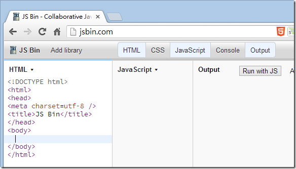
任意のエディタパネルに任意の文字を入力すると、すぐに「URLバー」が変化することに気づくでしょう。下図のように、番号1の場所があなたのBin ID、番号2の場所はこのBinのバージョン番号（デフォルトは1から始まります）、番号3の場所は現在の表示モード、editは「編集」モードを意味します。デフォルトでは、入力したHTML / CSS / JavaScriptはすべてすぐに一番右のOutputパネルに反映されます。
注：JS Binの中では、各フロントエンドWebページの組み合わせ（HTML + CSS + JavaScript）はBinと呼ばれます。
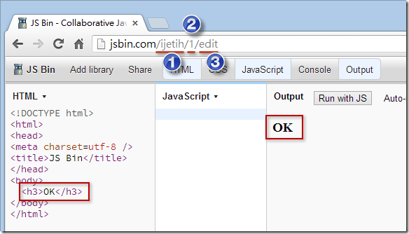
もちろん、このBin設定が完了すれば、現在のJS Bin URLをそのまま共有できるので、とても便利です！
ナビゲーションバーの紹介
下図はJS Binに入った後のメインレイアウトです。非常にシンプルで、最上部はナビゲーションバーだけです。以下、図の番号に沿って説明します。
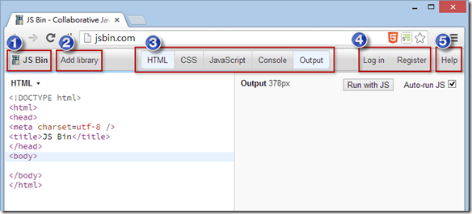
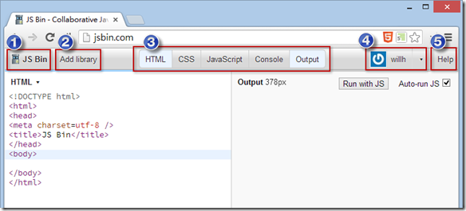
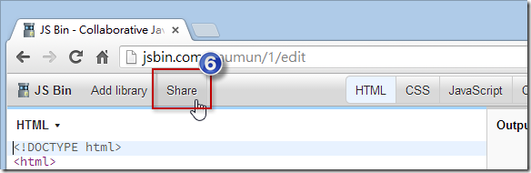
ナビゲーションバー1. JS Binメインメニュー
あなたはいつでも新しいBin、クリックNewオプションをクリックするだけです。
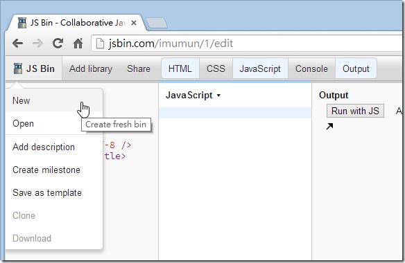
会員登録をしている場合、表示されます。Open機能が表示されます。なぜなら、あなたが編集したBinはすべて自動的に保存され、いつでも過去に書いたBinsを再度開くことができます。下図のように、特定のBinsを表示したくない場合は、アーカイブに設定することもできます。デフォルトではここに表示されませんが、後日再度見つけることができます。
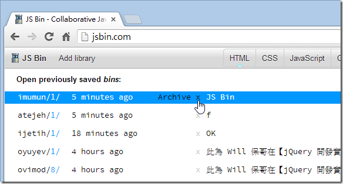
下図のように、 をクリックするとArchive viewかつてアーカイブした を復元できます。Bins
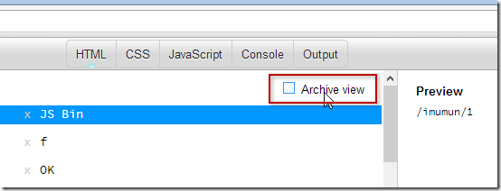
メインメニューのAdd description機能は、HTMLにdescriptionというメタタグを追加するだけです。
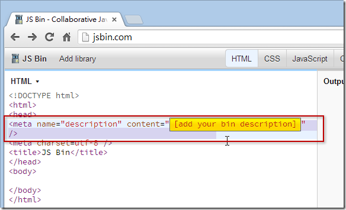
メインメニューのCreate milestone機能は、JS Binにこう伝えるだけです：「私はBinのマイルストーンを達成しました。現在のこのバージョンを固定してください。」。したがって、この機能をクリックすると、JS Bin URLの「バージョン番号」は自動的に+1
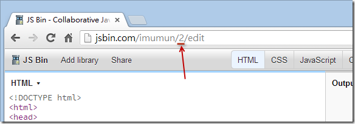
メインメニューのSave as template機能は、現在のあなたのBinをテンプレートとして保存し、将来新しいBinを作成するときに、デフォルトのHTML / CSS / JavaScriptには現在設定しているBin内容が含まれます。
メインメニューのClone機能は、先ほどのCreate milestone機能とは少しだけ違います。それは、バージョン番号を変えるのではなく、まったく新しいBinIDに変えることです。下図のとおりです。
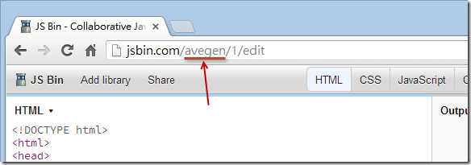
メインメニューのDownload機能は、 をBinダウンロードします。HTML / CSS / JavaScriptを1つのHTMLファイルに結合します。
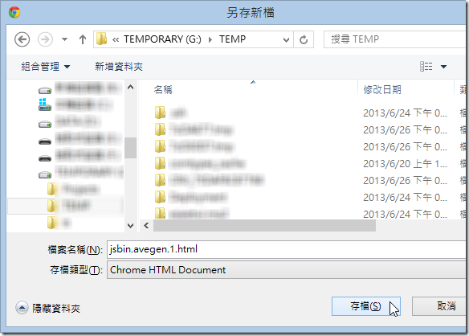
ナビゲーションバー2. Add library（ライブラリ挿入）
このボタンは、HTMLにjQuery、jQuery UI、jQuery Mobile、Bootstrap、YUI、AngularJS、Kendo UI、Backbone、Modernizrなどの一般的な外部リソースを簡単に挿入できます。便利な小さなツールです。
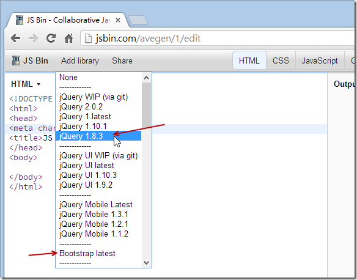
ナビゲーションバー3. 各種エディタ、コンソール、ライブプレビューパネル
HTMLエディタパネル
このエディタパネルは構文をハイライト表示します。残念ながらIntellisenseやオートコンプリート機能はまだありませんが、 に対応しています。Emmet ( Zen Coding）での記述方法が可能です。非常にすごいです！Zen Codingを知らない人は、以前私が録画したチュートリアルビデオ【VS2012拡張機能を活用 - ZenCodingを使ってHTML構文をすばやく生成（Web Essentials 2012）】には、特別な を利用してZen Coding構文でHTMLコンテンツをすばやく記述する方法がデモされています。
その他にも、異なる記述構文に切り替えることができ、最後に をクリックするとConvert to HTML自動的にHTML形式に変換されます。
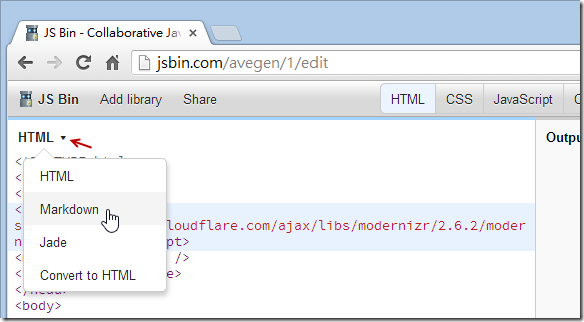
CSSエディタパネル
これはHTMLエディタとよく似ており、 にも対応しています。Zen Coding構文にも対応しています！より効率的なLESSやStylus構文でCSSスタイルを記述することもでき、最後に同様に をクリックするとConvert to CSS自動的に標準のCSS形式に変換されます。
注：JS Binをそのまま として使うこともできます。LESS或Stylusの学習ツールとして！
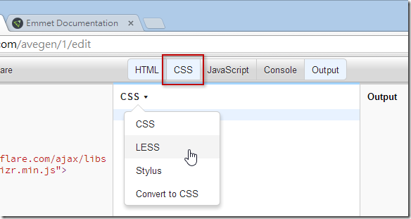
JavaScriptエディタパネル
これはHTML / CSSエディタにもよく似ており、JavaScriptを効率的に記述するための複数の構文に対応しています。TypeScriptにも対応しています！
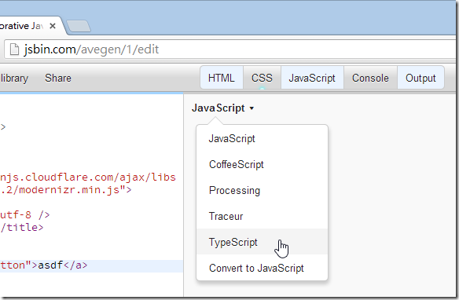
Console（コンソール）パネル
このパネルは、各ブラウザの開発者ツールにあるConsoleパネルと同じです。なぜわざわざWeb版を追加したのか分かりません。ブラウザ内蔵のものより使いやすいとは思えないので、ほとんど使っていません。
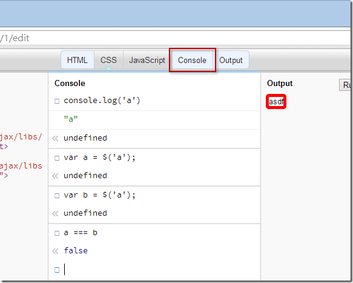
Output（出力）パネル
このパネルの主な用途は、最終的なHTML / CSS / JavaScriptの組み合わせによる実行結果を出力することです。デフォルトでは、Auto-run JSオプションがチェックされています。これは、JavaScriptエディタで入力しているときに、OutputパネルのWebページが絶えずリロードされることを意味します。このオプションが原因でブラウザがクラッシュすることがあります。ブラウザが不安定な場合は、この項目のチェックを外すことをお勧めします。チェックを外した場合、修正したJSを実行するには、 を押す必要があります。Run with JSボタンを押して初めて、新しいバージョンのJavaScriptプログラムが実際に実行されます。
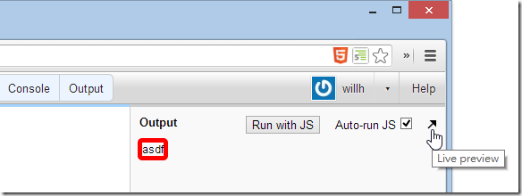
一番右のLive preview矢印は、Webページを新しいウィンドウで開くものです。このとき、URLが少し異なることに気づくでしょう。つまりeditこの部分がなくなっています。これは、このURLを他の人に共有して、Webページの実行結果を見てもらったり、Webページ上に設定されたインタラクティブ機能と比較的完全なインタラクションを行ったりできることを意味します。また、JS Binエディタパネルの影響を受けません。以下の比較図のとおりです。
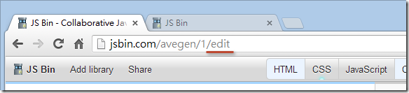
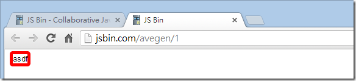
ナビゲーションバー4. ログイン、登録、メンバーアカウント/パスワードの更新（個人情報は一切なし）
JS Binは、EmailとPasswordを入力するだけで登録が完了し、身分確認も必要ありません。アカウントやパスワードを間違えても問題ありません。新しいものを再登録すればいいだけです！ログイン後の画面では、EmailとPasswordをいつでも好きなときに更新できます。とてもオープンです！
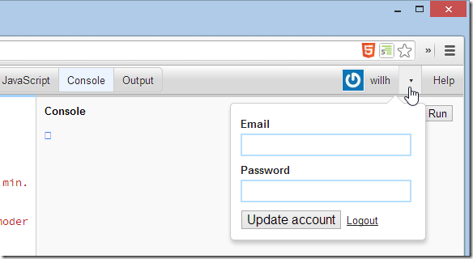
ナビゲーションバー5. Help（ヘルプ）ファイル
ここのすべてのリンクを読み終えると、JS Binのシンプルな外観に騙されていたことがわかります。実は内容は非常に豊かです！
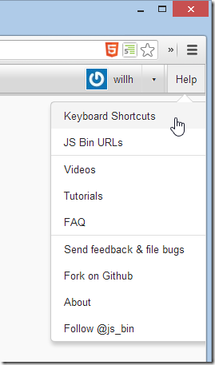
ナビゲーションバー6. Share（共有）
あなたのBinの編集が完了したら、さまざまな方法で共有できます。このShare機能メニューにはいくつかの機能が用意されています。
Lock revision #1 from further changesは、現在の#1バージョン（つまりURLバーにある1部分）をロックすることを意味します。この機能はJS BinメインメニューのCreate milestone機能とまったく同じです。
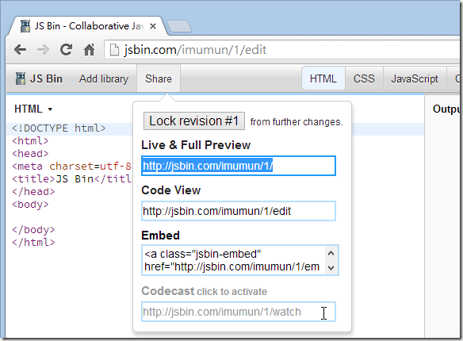
Live & Full Previewが提供するURLにアクセスすると、エディタパネルを含まないWebページが表示されます。特定の機能を試すときに邪魔されにくくなります。ただし、Webページの右上隅にはフローティングのEdit in JS Binボタンが表示され、いつでも編集パネルに入ることができます。
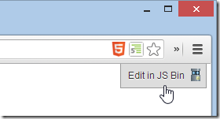
Code Viewは、私たちが編集する画面です。
Embedは単にハイパーリンクを埋め込むだけではなく、最終的にJavaScriptファイルを読み込み、そのハイパーリンクを直接複雑なページに変換します。下図のとおりです。
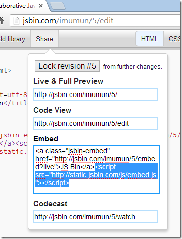
この文字列をWebページに配置すると、表示結果は下図のようになります。
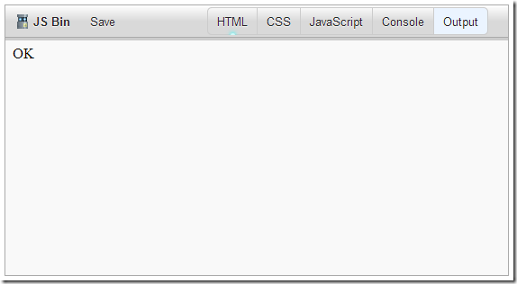
最後のCodecastは「ブロードキャスト」機能です。そのURLを他の人に共有し、相手にそのWebページを開いてもらうと、その後あなたがこのBinの任意の内容を変更し続けると、相手のブラウザにはあなたと同じ内容が表示されます。だから「ブロードキャスト」機能と呼ばれます。オンライン授業や遠隔授業に非常に適しています！
§ JS Binを使うちょっとしたコツをいくつか共有
1. 行番号表示を有効にする
これはドキュメントに載っていない裏技です。エディターペインのタイトルをマウスでダブルクリックするだけで、行番号表示が有効になります。もう一度ダブルクリックするとオフになります。非常に便利です。
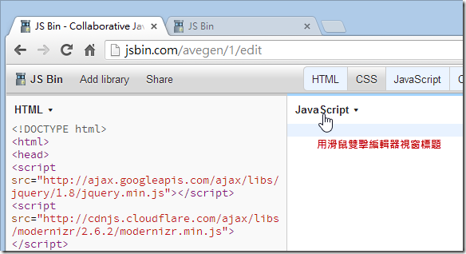
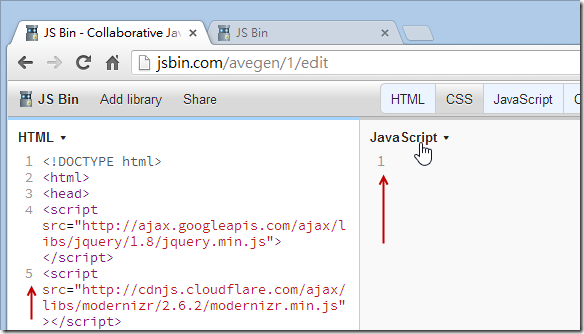
2. カスタマイズBinIDの方法
これもまたドキュメントに載っていない裏技です。ほとんどの人はJS BinではURLをカスタマイズできないと思っていますが、実はできます。方法は以下のとおりです。
まず現在のURLが何であるかは気にせず、アドレスバーにカスタマイズしたいものを直接入力します。Bin ID下図のとおりです。
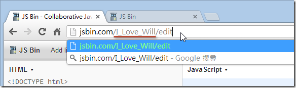
Enterキーを押すと、新しいBinが自動的に生成され、このBin IDはあなたのものになります！(^_^)
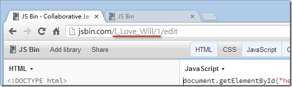
3. 制御Bin編集画面のデフォルトペイン
あるBinの編集画面に入るとき、その人のJS Binの設定に応じて、デフォルトで開く5つのペインはそれぞれ異なります。今日、特定のBinを相手に共有したい場合、相手にデフォルトでHTMLとJavaScriptのペインだけを開いてほしいなら、URLを少し変更するだけです。例えば次のBinのURL：
- http://jsbin.com/avegen/1/edit
URLを以下のように変更できます（URLの最後にQuery Stringを追加し、カンマで区切ります）。そのURLを相手に渡すと、相手はあなたの意図どおりにHTMLとJavaScriptのペインを開きます。
- http://jsbin.com/avegen/1/edit ?html,javascript
この5つのペインがそれぞれ表すパラメータ名は以下のとおりです。
- htmlHTMLエディター
- cssCSSエディター
- javascriptJavaScriptエディター
- consoleコンソール
- liveライブプレビューペイン
4. JavaScriptの括弧対応ハイライトを有効にする
JS Binは次のものを使用するためCodeMirrorパッケージをJavaScriptエディターとして使用しています（このパッケージは超高性能です）。そのため、JavaScriptエディターをカスタマイズしたいのであれば可能です。参照するのはCodeMirrorのAPIドキュメントです。それだけです。ここでは、JavaScriptの括弧対応ハイライト機能を有効にするという、便利なオプション設定を紹介します。
このBinを例にします。http://jsbin.com/oyuyev/1/edit
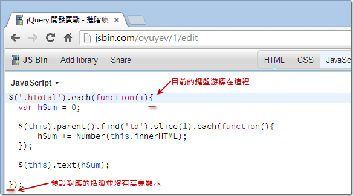
ブラウザの開発者ツールのConsole（コンソール）タブで以下のコマンドを実行する必要があります。ブラウザ内蔵の開発者ツール（IE8+、Chrome、Firefox、Safariすべてにこのようなツールがあります）を開き、Consoleまたはコンソールタブに切り替えて、次のように入力します：
jsbin.settings.editor.matchBrackets = <span class="kwrd" style="color: #0000FF;">true</span> ;
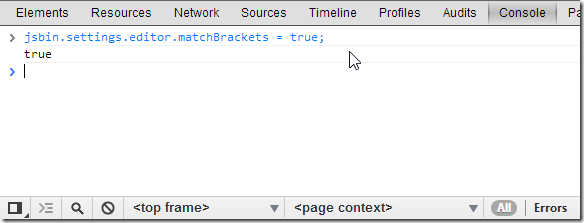
その後、F5（Webページの更新）を押してください。キーボードカーソルを同じ中括弧の場所に移動すると、ハイライト表示されているのがわかります。
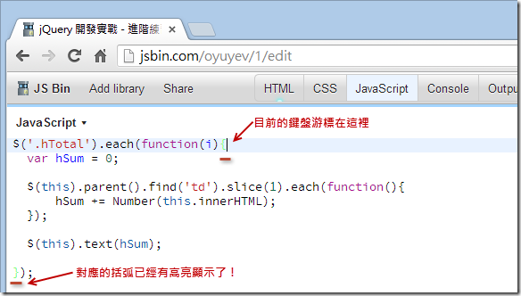
5. JS Bin開発環境をリセットする
現在のバージョンのJS Binで、メインメニューのSave as template機能を実行してしまうと、残念ながら元には戻れません！つまり、サイト内蔵のデフォルトのHTMLテンプレートに戻すことはできません。また、エディターの設定を変更しすぎて正常に使用できなくなった場合、実はJS Bin開発環境をリセットすることができます。その場合は、以下のテクニックを使用できます。
注：これもドキュメントに載っていない裏技です。このテクニックは数時間かけてやっと理解できました！
ブラウザ内蔵の開発者ツール（IE8+、Chrome、Firefox、Safariすべてにこのようなツールがあります）を開き、Consoleまたはコンソールタブに切り替えて、次のように入力します。delete jsbin.settingsEnterキーを押して実行します。実行に成功すると、すべての設定をリセットできます。
delete jsbin.settings
ただし、html / css / javascriptのtemplatesの内容も消去する必要があります。JS BinはこれらのテンプレートをブラウザのlocalStorage（これはHTML5のストレージメカニズムです）に保存しているからです。このときも次のように入力する必要があります。localStorage.clear()そうして初めてこれらの残留データを完全に消去できます。
localStorage.clear()
実行完了後の画面は以下のとおりです。実行後、F5（更新）を押すと、最初のデフォルト値に戻ります！
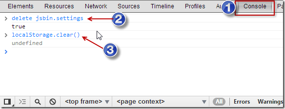
6. JavaScriptコンテンツのみを出力する（別のBinがAJAX経由で読み込めるように）
例としてhttp://jsbin.com/ json-test /1/ editを使用し、私は次を入力します純粋なJSONのJavaScriptを入力しました。また、ここからいくつかのJSHintという警告メッセージが表示されますが、まずは無視しましょう。
{
"author" : "Will" ,
"bookname" : "ASP.NET MVC 4开发实战"
}
注意：JSON内の文字列は「二重引用符」で囲む必要があります！
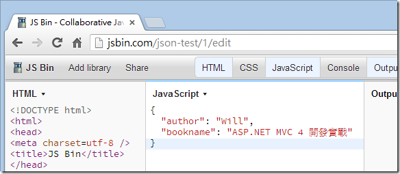
このとき、もう一つ新しいBinを作成し、jQueryライブラリを追加します。 （注：このときHTML内容が変更されたため、すぐに新しいBinIDが割り当てられ、新しいURLが生成されます）
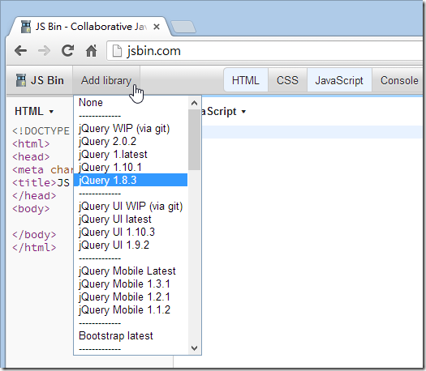
このとき、先ほどのURLを少し変更して、/editを次のように変更します.jsするとJavaScript部分だけを取得できます。次のとおりです。
- http://jsbin.com/ json-test /1 .js
次に以下のjQueryプログラムを入力して、jQueryのAJAX機能をテストしてみます。
$.ajax({
url: 'http://jsbin.com/json-test/1.js' ,
dataType: 'json' ,
success: function (data) {
alert(data.author + ' - ' + data.bookname);
}
});
私と同じ画面が表示されれば、$.ajaxで取得したものが確かにJSONオブジェクトであることを意味します！
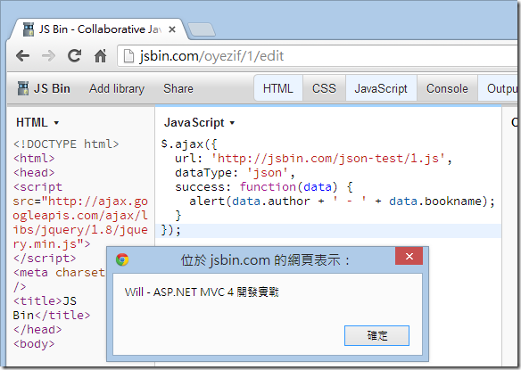